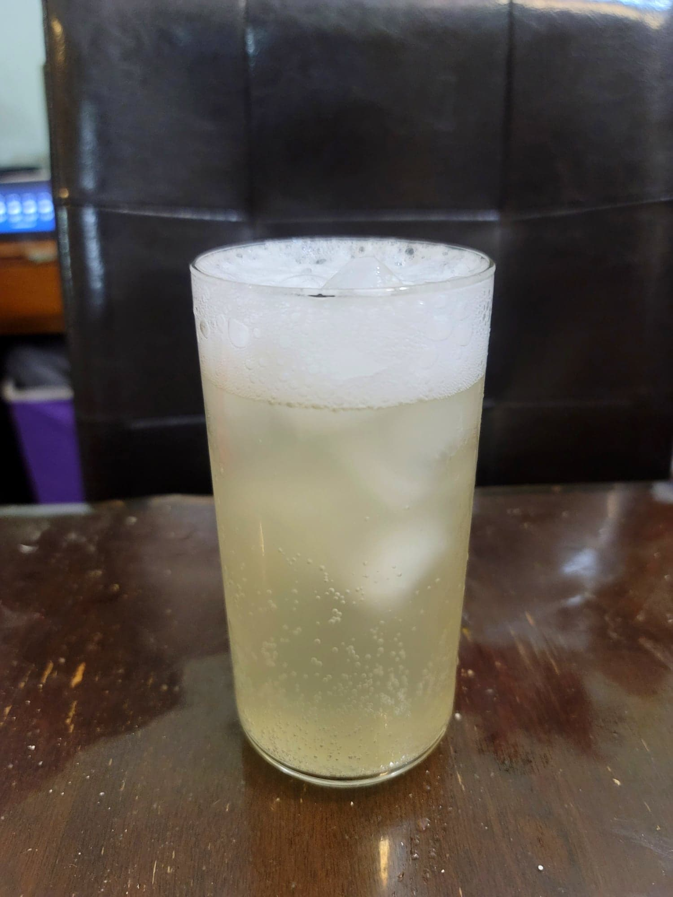

Ginger Beer

Ingredients:
- 8 cups Water, non-chlorinated
- 8-12 tbsp Grated ginger
- 1 cup Sugar
- 1/2 cup Ginger bug
- Optional: 1-3 Lemons, juiced
Instructions:
- Place the water, sugar, and ginger into a pot and bring to a boil over high heat. The reduce to a simmer and let simmer for about 5 minutes. Let the mixture cool down completely to room temperature.
- Mix in the ginger bug and lemon juice. Then strain and store 2/3 of the way into flip top bottles. Let rest in a dark, room temperature spot for about 5 days or until carbonated to your liking. Make sure to burp the bottles about every 12 hours.